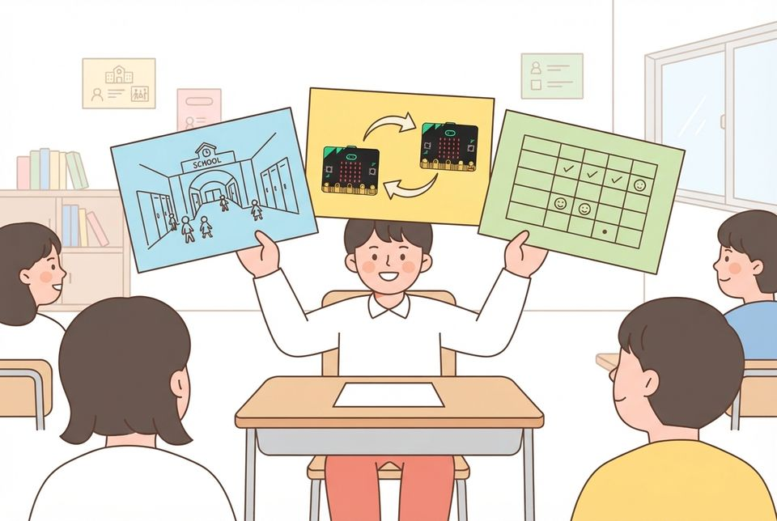
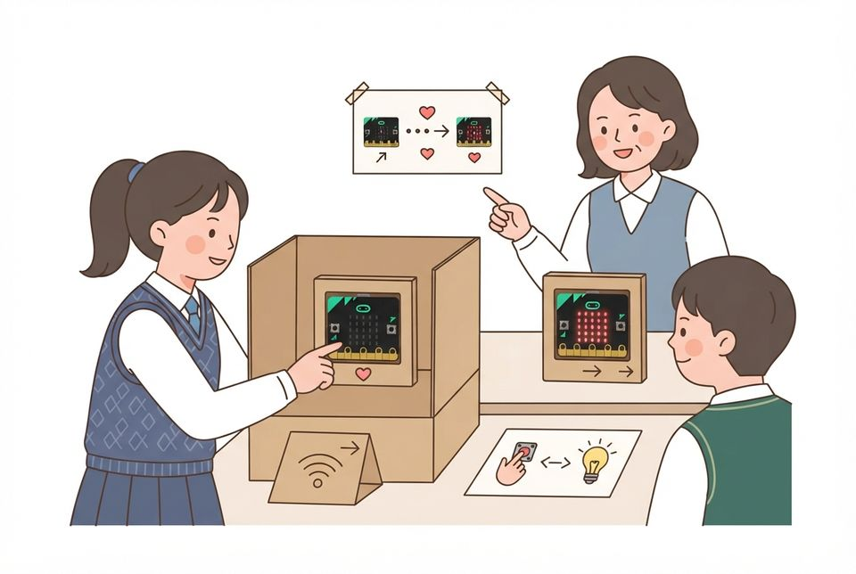

5학년 29~30차시 협력과 공유 [5실소프트웨어04-01]
초청 사용자의 시험 기록을 모아 작품을 설명하고 다음에 고칠 것 정하기
학습 문제 — 초청한 사용자의 시험 기록을 모아 작품을 설명하고, 다음에 고칠 것 한 가지를 까닭과 함께 정해 봅시다.
개요
| 성취기준 | [5실소프트웨어04-01] 친구와 역할을 나누어 프로그램을 만들고, 서로의 코드를 검토해 고친다. 사용자 시험 기록을 근거로 작품을 설명하며 공유한다. 연계 성취기준: [6실05-03], [06자율-4] |
|---|---|
| 핵심 역량 | 협력적 소통 역량, 창의적 사고 역량 |
| 핵심 기능 | ① 처음 쓰는 초청 사용자에게 줄 과제·성공 기준과 기록 칸 정하기 ② 초청 사용자 시험에서 성공·막힌 곳·걸린 시간 기록하기 ③ 모은 시험 기록을 근거로 작품을 발표하기 ④ 많이 막힘·고치기 쉬움으로 견주어 개선 우선순위 정하기 ⑤ 정한 개선을 다음 점검 차시로 넘겨 고칠 계획 세우기 |
| 가치 태도 | 프로그래밍을 통해 만든 산출물을 타인과 공유하고 협력하려는 자세 친구의 의견을 프로그램에 대한 말로 주고받으며 고쳐 보려는 자세 |
교수학습 활동
29차시 도입 동기 유발 · 학습문제 제시29차시 전개 활동1. 사용자 시험 계획과 발표 카드 준비 · 활동2. 한마당 1부: 초청 사용자 써 보기30차시 전개 활동3. 한마당 2부: 부스에서 기록 모으기 · 활동4. 기록으로 설명하고 고칠 순서 정하기30차시 정리 배운 내용 정리 · 다음 차시 예고
29차시도입8분
동기 유발
- 지난 시간에 고친 무선 도구를 켜서 한 번씩 주고받기
- ‘잘 돼요’와 ‘처음 쓴 동생 5명 중 4명이 1분 안에 성공했어요’ 가운데 더 믿을 말 고르기
- 오늘 미션 ‘써 보기 한마당’: 우리 반이 아닌 사용자가 처음 써 보는 날임을 알기

학습문제 제시
- 초청한 사용자의 시험 기록을 모아 작품을 설명하고, 다음에 고칠 것 한 가지를 까닭과 함께 정해 봅시다.
준비물모둠 마이크로비트(송신기·수신기), 배터리 팩
자료모둠 무선 도구 파일, 통신 약속표, 한마당 규칙 카드, [도입] 상황 그림
유의점B12는 모둠 안·모둠 사이 코드 리뷰로 고치는 차시임을 짚는다.
유의점이 차시는 코드를 고치지 않고 외부 사용자의 기록으로 설명하고 고칠 순서를 정한다.
유의점기기 배부와 파일 열기 시간을 도입 시간에 포함한다.
29차시전개32분
활동1. 사용자 시험 계획과 발표 카드 준비 (15분)
- 처음 쓰는 사람에게 줄 과제 한 가지와 성공 기준 정하기
- 사용자 시험 기록지에 성공·막힌 곳·걸린 시간 칸 만들기
- 카드1(문제)·카드2(통신 약속)를 쓰고 카드3(시험 기록)은 비워 두기
- 골판지 삼각 간판을 세우고 안내·시간 재기·기록 역할 나누기

활동2. 한마당 1부: 초청 사용자 써 보기 (17분)
- 초청 사용자에게 그림 사용 안내 한 장만 건네고 말로 돕지 않기
- 과제를 해내면 성공, 멈추면 막힌 곳을 기록지에 적기
- 시작부터 성공까지 걸린 시간을 초시계로 재어 적기
- 사용자가 남긴 한마디를 그대로 옮겨 적기
준비물필기구, 엽서 크기 색도화지 3장, 골판지 판, 매직, 초시계, 마스킹테이프
자료사용자 시험 기록지(성공·막힌 곳·걸린 시간), 그림 사용 안내 틀, 통신 약속표
유의점초청 사용자(다른 반·저학년·교직원)는 미리 시간을 맞추고, 어려우면 옆 반과 짝 반으로 바꾼다.
유의점사용자가 막혀도 30초는 기다려 기록한 뒤에 돕는다.
유의점기록지와 간판에는 실제 이름 대신 ‘사용자1’, 모둠 별명만 쓴다.
유의점느린 학습자에게는 ‘○○을 누르면 ○○에 ○○이 떠요’ 문장 틀 카드를 준다.
30차시전개33분
활동3. 한마당 2부: 부스에서 기록 모으기 (15분)
- 틀에 넣은 송신기·수신기와 간판·카드로 부스 차리기
- 두 번째 사용자 무리를 같은 과제로 시험하고 기록하기
- 부스 지기를 바꾸어 모두가 기록을 한 번씩 맡기
- 모은 기록에서 성공 수와 가장 자주 막힌 곳 세기

활동4. 기록으로 설명하고 고칠 순서 정하기 (18분)
- 카드3에 성공 수·자주 막힌 곳·걸린 시간 옮겨 적기
- 모둠 안에서 한 사람씩 카드 세 장으로 2분 발표하기
- ‘잘 된다’ 대신 기록의 수를 짚어 말하기
- 막힌 곳 후보를 ‘많이 막힘·고치기 쉬움’ 표에 놓아 견주기
- 다음에 고칠 것 한 가지와 까닭을 개선 카드에 쓰기
준비물모둠 마이크로비트, 배터리 팩, 초시계, 붙임쪽지
자료사용자 시험 기록지, 발표 카드, 개선 순서 표(많이 막힘·고치기 쉬움), 개선 카드
유의점부스마다 교사가 배정한 그룹 번호를 그대로 써서 신호가 섞이지 않게 한다.
유의점이 차시에는 코드를 고치지 않고, 고칠 것은 개선 카드에 적어 두게 한다.
유의점부스에서 기기가 멈춘 일은 이해 부족으로 평가하지 않고 기록으로 남긴다.
유의점빠른 학습자는 두 번째 후보까지 순서를 정하고 그 까닭을 쓰게 한다.
30차시정리7분
배운 내용 정리 (5분)
- 모둠별로 고칠 것 한 가지와 까닭을 30초로 발표하기
- 우리끼리 시험한 결과와 처음 쓴 사람의 결과가 어떻게 달랐는지 한 줄 적기
다음 차시 예고 (2분)
- 무선 메시지를 안전하게 나누는 약속을 정하고 전시한다는 안내 듣기
- 정한 개선은 31~32차시(B14) 점검 때 함께 고친다는 안내 듣기
- 기기와 기록지·개선 카드를 정리해 제출하기
자료개선 카드, 사용자 시험 기록지
유의점쓰기를 어려워하는 학생은 말로 확인하고 도운 사실을 적어 둔다.
유의점모둠 부스 결과로 개인 성취를 대신 판단하지 않고 각자의 발표와 개선 카드로 본다.
유의점발표 차례가 오지 않은 학생은 낮은 성취가 아니라 미관찰로 따로 적는다.
평가 계획
컴퓨팅 사고력 · 사용자 시험 기록에 근거한 설명과 개선 판단
초청 사용자의 시험 기록(성공·막힌 곳·걸린 시간)을 모아 작품을 설명하고, 기록을 근거로 다음에 고칠 것 한 가지와 까닭을 정할 수 있는가?
| 수준 | 평가 기준 |
|---|---|
| 매우 잘함 | 사용자 시험 기록을 빠짐없이 적고 성공 수·자주 막힌 곳·걸린 시간을 정리한다. 발표 카드 세 장으로 문제·통신 약속·시험 기록을 말하며 기록의 수를 짚어 작품이 어떻게 쓰였는지 설명한다. 막힌 곳 후보를 많이 막힘·고치기 쉬움으로 견주어 고칠 것 한 가지를 고르고 그 까닭을 기록으로 설명한다. |
| 잘함 | 사용자 시험 기록을 적고 기록을 들어 작품을 설명한다. 고칠 것 한 가지를 고르나 까닭과 기록의 연결이 간단하다. |
| 보통 | 작품을 설명하나 시험 기록을 근거로 들지 못한다. 또는 고칠 것을 골랐으나 까닭이 기록과 이어지지 않는다. |
| 노력요함 | 교사가 기록지를 함께 읽고 막힌 곳을 짚어 준 뒤에도 기록을 근거로 설명하거나 고칠 것을 정하는 데 어려움이 있다. |
| 미관찰 | 결석이나 미제출, 발표 차례가 오지 않아 확인하지 못한 경우. 낮은 성취로 적지 않고 따로 기록한 뒤 보충 확인 시점을 정한다. |
평가 방법 산출물 분석(사용자 시험 기록지·발표 카드·개선 카드) · 발표 관찰(모둠 안 발표) · 구술 확인
연동 도구·링크
과정안에 나오는 도구가 저절로 걸립니다. 수업 전에 학교망에서 열리는지, 블록·메뉴 이름이 바뀌지 않았는지 확인하세요.
MakeCode (micro:bit) ↗마이크로비트 블록 코딩·시뮬레이터·무선(라디오)계정: 필요 없음라디오 블록 설명 ↗MakeCode (micro:bit) 안내마이크로비트 V2 ↗LED·버튼·가속도·소리 센서, 무선 통신계정: 필요 없음
내 수업 링크
학급 패들렛, 엔트리 작품, 활동지 주소처럼 이 차시에 쓸 링크를 걸어 둡니다. 이 브라우저에만 저장되고 밖으로 보내지 않습니다. 학생 이름이 든 주소는 넣지 마세요.